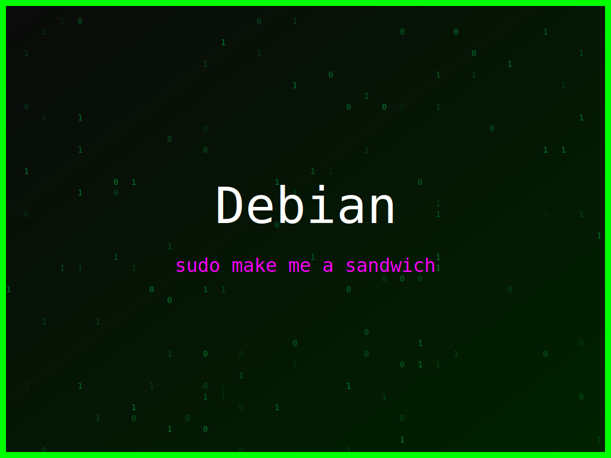

<section class="post-content">


    <div class="details-container">
        
        
        <ul class="details-list">
            <li><strong>Autor:</strong> piolinux</li>
            <li><strong>Descrição:</strong> Arte digital para Debian que celebra o comando 'sudo' com uma atitude de 'tudo ou nada'.</li>
            <li><strong>Distro:</strong> Debian</li>
            <li><strong>Frases:</strong> sudo make me a sandwich, Sudo or Die, Command line master</li>
            <li><strong>Tags:</strong> matrix, colorido</li>
        </ul>
        <a href="../galeria.html">Voltar para a galeria</a>||
        <a href="../wallpaper34.svg" download="wallpaper-debian-forca-do-sudo.svg">Baixar Wallpaper</a>
    </div>

</section>
